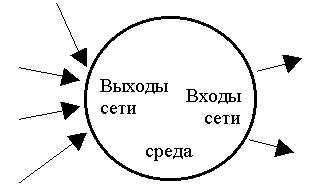
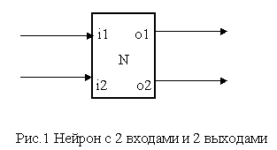
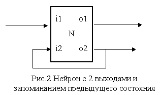
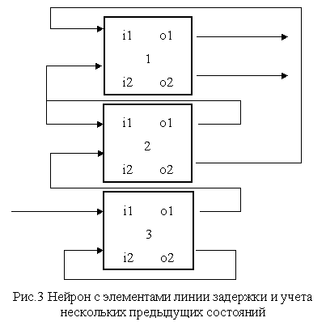
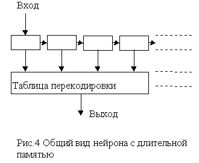
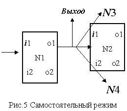
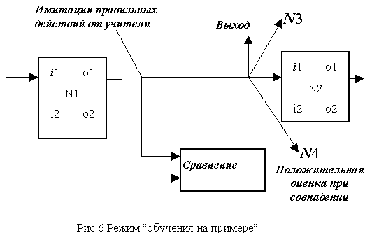
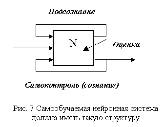

При решении творческой задачи, то есть такой, которую неизвестно как решать, творец делает разные случайные или осмысленные попытки решения в окрестности того, что ему известно. Благодаря его заинтересованности он более чем другие , способен оценить, что какая-то из попыток приближает его к решению задачи. После этого происходит исследование вновь открывшихся возможностей.
Рабочий дневник 1996
Эти записи не предназначались для публичного чтения. Они содержат кучу ошибочных предположений. Многие заявления являются или кажутся логически не связанными, необоснованными или просто противоречащими друг другу. Некоторые рассуждения относятся к алгоритму и ссылаются на имена переменных, которых давно уже нет в программе, так как она постоянно изменяется.
Здесь вы видите булыжник, от которого ещё предстоит отсечь всё лишнее, чтобы стало ясно "что такое разум и как его изготовить". При чтении этих записок, не упускайте из виду, что мои взгляды со временем меняются.
Надеюсь, что мои сырые, но довольно конструктивные размышления внесут вклад в развитие ваших собственных идей и ваших алгоритмов универсального ассоциативного обучения.
Разработка самообучающейся системы
25.11.96
Среда , (учитель, мир): Активный источник информации .
Цель : Потребность в получении информации, обусловленная внутренними причинами.
Ученик : Система, воздействующая на среду с определенной целью или без цели, и воспринимающая реакцию среды. Далее станет ясно, что ученик способен самообучаться.
Не только учитель воздействует на ученика с определенной целью, но и наоборот, ученик на учителя. Целью ученика является получение хорошей оценки. Если же обучение происходит без заинтересованности ученика, то это не ученик, а база данных, например, словарь, или шахматная программа.
Но техническая система должна допускать быстрое обучение без заинтересованности, если это теоретически возможно.
На начальном этапе, пока интеллект ещё не развит или задача слишком новая, обучение может происходить без заинтересованности. Например, крысу приучают нажимать на педаль после звонка. Разве она могла быть в этом заранее заинтересована? Улитка или бабочка ищет по запаху другую улитку (бабочку). Не найдёт, у неё не будет потомства. Учителем оказывается естественный отбор, а полезный "результат обучения" запоминается в ДНК.
Следовательно, некоторые основные разумные (intelligent, то есть, исходящие от мозга) инстинкты зашиты в мозг и для них обучение не требуется. Как это получается? Мозг, как и другой орган тела, развивается даже и без обучения. Если его внутренние структуры содержат уже жизненно необходимые знания, то такая особь выживет, даст потомство. (Зашитая в ДНК схема правильной внутренней структуры мозга способствует выживанию этой ДНК.) Кроме того, мозг способен к самообучению. Если эта способность достаточно развита, то особь лучше будет ориентироваться и адаптироваться в мире и с большей вероятностью выживет. Уровень способностей к самообучению может быть разным, что тоже определяется генетически. Чем лучше, те больше шансов продолжения рода. В итоге, число умных особей увеличивается.
Привыкание к неожиданно изменяющемуся внешнему миру, конечно, происходит без заинтересованности, но не бессознательно. При привыкании приходится приучаться к новому, полезному для данного существа поведению. Привыкание, адаптация или самообучение менее эффективно, чем обучение учителем. Самообучение без постоянного стимулирования (без заинтересованности в самом процессе учёбы) похоже на естественный отбор, а обучение с учителем - на искусственный. Из некоторого количества реакций на заданные условия учитель выбирает и поощряет только правильные реакции, а также показывает правильное поведение или принуждает к правильному поведению.
Также объясняется и творчество. При решении творческой задачи, то есть такой, которую неизвестно как решать, творец делает разные случайные или осмысленные попытки решения в окрестности того, что ему известно. Благодаря его заинтересованности он более чем другие , способен оценить, что какая-то из попыток приближает его к решению задачи. После этого происходит исследование вновь открывшихся возможностей. И так далее. Если творец ошибся в самооценке, то он может зайти в тупик и не решить задачу. Не каждому дано. Или не каждому везёт.
В природе хорошей оценкой может быть получение пищи или избежание вреда. В принципе, любое воздействие ученика на среду можно трактовать, как вопрос. А также, любое воздействие обучающейся системы на среду можно трактовать, как вопрос. Такой системой может быть мозг, а объективной средой для него - внутренние органы тела.
Среда не может не ответить. Положение Среды и ученика в некотором смысле равноправны. Любое действие Среды можно трактовать как вопрос (или приказ) ученику. И ученик обязан отвечать. Игры, в которых можно думать сколько угодно, - это игры, а не живое неостановимое сознание.
Целью учителя является скорейшее приучение ученика к определенному поведению путем сообщения ему нужной информации и выставления оценок за его поведение. Учитель является фильтром между средой и учеником.
Семантика. Пусть имеется ученик с входом для оценок
и выходом для информации. Ученик способен выдавать на выход нули
0 или единицы 1. Надо приучить его к выдаче только нулей. Очевидно,
что поведение учителя должно состоять в том, чтобы ставить хорошую
оценку за каждый 0. Также можно его приучить выдавать только Yes.
* Пусть ученик первоначально способен выдавать разные слова.
Но выдаст ли он когда-либо слово Yes?
* Почему ученик способен выдавать слова?
Объектная структурность .
Все алгоритмы блоков
системы должны быть одинаковыми. То есть, они действуют одинаково
над разными наборами данных. Количество и структура вложенности
блоков заранее не определено.
* Либо они имеются в избытке.
* Либо строятся по мере необходимости.
* Либо над разными типами данных рекурсивно действует один
блок.
Семантика. Как определить, что эта буква не может стоять после этой? Это слово не может быть после этого? Как это сделать, не имея словаря всех слов и всех фраз? Для этого ученик должен обладать способностью к обобщению. Что это значит и как это формализовать?
Обобщение (def):
a. Выделение некоторого логически нового типичного объекта из потока данных так, что этот объект может быть описан по характерным для него свойствам.
В терминах ассоциаций, это установление новой устойчивой связи между известными старыми объектами.
Что такое логически новый объект? Как это формализовать, или определить более конструктивно? Можно считать логически новым объектом такой объект, которому приходится присваивать имя, для удобства работы с ним. То есть сама новизна субъективна. А присвоение имени технически может произойти для упрощения ссылок на этот объект, которые иначе были бы слишком длинными.
b. Узнавание в новом предмете предмета, отнесённого ранее к определённому классу.
Алгоритмически, это просто узнавание. Степень новизны предмета субъективна.
c. Применение правил, выработанных ранее в одной предметной области, к другой предметной области.
Что такое предметная область с точки зрения мозга? Ведь для мозга все информационные каналы имеют одинаковую природу.
Обобщение - это абстрактный алгоритм, действующий над данными любой природы. То есть, благодаря обобщению становится возможным видеть общее в разных явлениях. Поэтому можно применять одни и те же приемы работы с разными объектами.
Может быть, внутренний стимул ученика (стимул для мозга) это высвобождение внутренних ресурсов (памяти, разнообразия, скорости и др.) благодаря обобщению. Возможно, стимулом (существа, ученика) является способность предвидеть получение хорошей оценки за определенное поведение. Стимулом является сама хорошая оценка. А способность предвидеть создаёт мотив, цель, целенаправленные действия для получения хорошей оценки. Аналогично, страх - предвидение худшего.
26.11.96 Нейронная сеть
Пусть обучающаяся структура состоит из однородной сети "нейронов" + датчики-преобразователи на входе и выходе. Нейрон имеет несколько входов и выходов. Он представляет собой структуру, имеющую индивидуальное поведение, которое заключается в том, что при определенном входном сигнале он выдает определенный выходной сигнал в соответствии с внутренней таблицей перекодировки. Пусть нейрон имеет до 8 входов для бит и до 8 выходов для бит. Тогда таблица имеет объем 256 байт. Это "полная таблица перекодировки". Однако здесь нет динамики!
Со временем информация в таблице забывается (портится?), а после получения положительной оценки она некоторое время остается стабильной. То есть, положительная оценка предназначена для поддержания жизни всех накопленных данных (методов обработки данных). Входы и выходы могут быть аналоговыми или информационно насыщенными (например, нейрон может принимать и выдавать слова из словаря). Такой нейрон обучаем.
Забывание не так важно, как может показаться. Это свойство имеется у биологического нейрона, но мы не обязаны его воспроизводить. Если забывается то, что не используется, то это конструктивно ни на что не влияет, то есть, не влияет на функционирование системы, как если бы забывания совсем не было. Таблица может быть не полной (не полностью обученной).
Положительная оценка должна относиться не только к текущему мгновенному состоянию ученика, но и к ряду его предыдущих действий. Так ученик сможет понять связь между вопросом и ответом, выдаваемым через некоторое время (и сможет стремиться через ряд действий, то есть, имея цель и план, к хорошей оценке). Выходит, что нейрон должен помнить свои предыдущие действия.
Физический (биологический) нейрон - это клетка с некоторой изменяющейся внутренней структурой. Некоторая положительная оценка (фермент) замораживает структуру, но со временем она опять изменяется, если нет подпитки стимулирующим ферментом. Поэтому оценки должны быть достаточно частыми.
Обучаемая структура состоит из большого количества нейронов. Входы подключены к выходам и к датчикам сигналов среды. Каждый выход может быть подключен к нескольким входам. Некоторые выходы подключены к датчику (преобразователю) для воздействия на среду. Некоторые входы и выходы могут не использоваться.
Пример 1. Построим однородную замкнутую нейронную
сеть. Удалим один нейрон. Его место займет среда. При этом получится:
Если у нейрона входов больше, чем выходов, то у сети
(и у среды) - наоборот.

Пример 2. Подключим к произвольным точкам нейронной сети датчик выходного сигнала. Оборвем некоторое количество входов нейронов и подключим к ним датчик входного сигнала.
Технология обобщения.
Пусть таблицы перекодировки существуют как независимые объекты, а нейроны их используют (биологически это невозможно). Положительный стимул воздействует на таблицу, а не на нейрон. Пусть число таблиц ограничено, а нейронов - нет. Тогда, если какие-то нейроны вдруг обнаруживают, что их таблицы совпали, то они переходят к использованию одной общей таблицы, а освободившаяся таблица достается новому нейрону. Топология сети должна позволять добавление нейронов.
Если таблицы большие (сотни байт), то точное, и даже разумно-приближённое совпадение невозможно.
Физически и технически быстрый поиск близких таблиц можно выполнять путем сортировки. Медленный поиск можно выполнять путем случайного сравнения. Если не требовать точного совпадения, то становится возможной "догадка". При обнаружении одинаковых таблиц одна из них освобождается (и сбрасывается), а вторая получает стимулирующую оценку. Механизм сравнения таблиц и общий пул для таблиц являются внешними управляющими структурами относительно нейронной сети. Это нежелательно и, видимо, этого нет в природе. Но раз уж мы имеем только один процессор для опытов, то можно применить и 1 супервизор.
Такая структура нейронов обучаема и способна к обобщениям. Её внутренняя жизнь (подсознание) заключается в поиске обобщений (и имеет стимул?)
Среда вместе с датчиками входной и выходной информации воспринимается нейронной сетью как один (или несколько) из нейронов и тоже может участвовать в процессе поиска обобщений. Так, естественным путем, возникают вопросы к среде (любознательность).
В общем, любое воздействие на среду можно считать вопросом. Ученик не уверен заранее в ответной реакции среды. Однако среда не имеет таблицы перекодировки. Такую таблицу можно строить в реальном времени по мере диалога со средой и сравнивать эту виртуальную таблицу с таблицами других нейронов. (Это опять внешняя функция).
При этом обобщение не удается, но положительная оценка может быть получена за совпадение внутренней перекодировки с внешним диалогом. Виртуальная таблица среды имеет абсолютную истинность и не портится от времени, но постоянно изменяется в результате практики общения со средой. Это утопия и внешнее заданное свойство . Если "внешняя таблица" включает всю динамику внешнего мира, то есть все законы природы, то, в принципе, она тоже не изменяется, но она весьма велика. :)
27.11.96 Вопросы.
- Сколько входов и выходов оптимально?
- Какой тип данных оптимален?
- Какая степень общения со средой оптимальна? Мощность мозга должна соответствовать мощности датчиков, сообщающихся с внешним миром.
- Как построить оптимальный обучающий алгоритм?
- Какое значение имеет структура нейронной сети?
- Какая степень совпадения таблиц перекодировки достаточна для обобщения?
- Как разделить таблицу при обнаружении отсутствия общности?
- Можно ли установить, что вывод об общности был ошибочным?
- Как построить эффективный стимул? Важна ли количественная оценка?
- Какое подсознание кроме функции обобщения требуется?
- Нужно ли нейронам спать? Имеет ли смысл части сети отключиться от всех и заняться собственным обустройством? Это в компетенции супервизора.
- Можно ли иметь общую таблицу для перекодировки и коммутации?
- Важно ли, чтобы нейроны работали параллельно или допустима последовательная обработка сигналов?
/// Почитать о биологии клетки.
Обобщение (биологический алгоритм).
Пусть таблицы перекодировок встроены в нейроны и не могут быть общими. Пусть таблица может принимать не произвольные значения, а некоторые фиксированные. Тогда они порой будут становиться одинаковыми у разных нейронов и, ничего об этом не зная, нейроны будут действовать одинаково над разными объектами. Логически можно понять, что это и есть обобщение. А практически: одинаковая логика воспроизводится в большом количестве экземпляров. При этом сам мозг не обнаруживает наличия одинаковых таблиц и при возникновении таких таблиц не возникает никаких положительных оценок и стимулов. Просто общность нейронных таблиц соответствует общности реальных природных объектов, что может осознать только интеллект (intellect, intelligence). В чем тогда заключается подсознание (бессознательная, неосознавемая полезная работа нейронов)?
Подсознание есть просто постоянное функционирование системы без определенной цели. Только если система сможет предсказывать поведение среды, может возникнуть цель - получение стимула . Основная цель биологического мозга: поддержание согласованной работы всех систем организма и, в конце концов, выживание и размножение. Это и есть "адаптация к изменяющемуся миру".
Как возникает механизм предвидения? Никакие супервизоры и централизованные органы управления не желательны. Нужно выбирать не тот диалог, который ведёт к высокой немедленной оценке, а тот, который продолжается дольше всего с сохранением положительной оценки. Если система вырабатывает своё поведение, то это похоже на диалог.
- Существует ли логический механизм миграции обобщения по нейронной сети?
- Может ли вообще какая-либо логическая структура физически перемещаться по сети?
- Существует ли сплошная аналогия сети - обучаемый континуум?
- Существует ли обучаемый континуум диалогов?
- Можно ли установить аналогию между нейроном и элементом (но не узлом) конечно-элементного разбиения пространства?
3 декабря 1996. Ответы
Сколько входов и выходов оптимально?
Отделим часть нейронной сети замкнутой поверхностью. Вместо всего, что окружено, вводим новый нейрон. Все входящие в контур выходы подключаем к входам этого нейрона, а все выходящие из контура входы прочих нейронов подключаем к выходам нового нейрона. Новая крупная сеть логически совпадает со старой мелкой сетью, если не принимать во внимание задержки в распространении сигналов. Может только она несколько мощнее, так как имеет потенциально более полную таблицу перекодировки.
Итак, сколько входов и выходов все равно. Сколько удобно, столько и лучше. Вероятно несколько лучше большее количество входов и выходов. Вместе с тем, большой нейрон без внутренних задержек, в отличие от нескольких маленьких, не способен запомнить последовательность действий. Если все связи внутри контура поменять на "скрытые" входы и выходы или ввести внутреннюю линию задержки, или запоминать весь диалог, то запомнить последовательность действий можно.
Какой тип данных оптимален?
Непрерывные (аналоговые) данные логически эквивалентны большому количеству разрядов дискретных данных. Поэтому оптимален удобный тип данных. Однако обработка дискретных данных дискретной сетью более эффективна. Числовые и логические данные обрабатываются одинаково, если допустима только операция равенства, но сравнения "больше или равно" запрещены. Могут быть сравнения массивов логических данных с результатом "лучше, хуже". Можно сделать часть каналов символьными, а часть - аналоговыми.
Какая степень общения со средой оптимальна?
Чем больше, тем лучше. В крайнем случае, не вся информация будет использована. Например, лучше иметь информацию о расстоянии до объекта и о контакте с объектом, чем только о контакте. А вообще, у живого мозга примерно 1/1000 (?) внешних связей, остальные - внутренние. Оптимальная степень определяется воспринимающей системой. Надо, чтобы получаемые данные использовались в полной мере. А реакция должна обеспечивать решение жизненных задач системы.
Как построить оптимальный обучающий алгоритм?
Алгоритм должен быть оптимальным как по скорости обучения, так и по удобству наблюдения за обучением и за результатами. Для экспериментов удобно построить искусственный мир в виде понятного графического объекта. Нужно сделать так, чтобы этот мир подавал на входы сети существенную и видимую информацию о себе и явно реагировал, на активные действия обучающейся системы, то есть на сигналы, попадающие на выходы нейронной сети.
Например, пусть мир представляет собой круг, в одной точке которого находится еда (стимул, положительная оценка). Обучаемая система может делать шаг влево или вправо вдоль окружности (выдавая 0 или 1 на выход). Мир реагирует на это перемещением точки влево или вправо. При попадании в точку с едой мир выдает оценку, и сигнал (еду) на вход.
При этом обучающаяся система может содержать 1 нейрон с 1 выходом и 2 входами. 1 для еды и 1 для информации о своем перемещении.
В литературе описаны два основных способа обучения: самообучение и обучение с учителем. Учитель может вести систему "за ручку" по правильному пути. При этом она не может научиться определять путь, но будет знать, какой путь правильный. Обучение включает 2 части: Наблюдение и синтез поведения.
Какое значение имеет структура нейронной сети?
Похоже, что небольшое. Смотри вопрос о количестве входов и выходов. Чем больше нейроны, тем более сложную информацию они могут хранить. Чем больше нейронов, тем более продолжительную последовательность действий они могут хранить (?). Желательно, чтобы все входы и выходы использовались. Если 1 нейрон помнит бесконечно длинный (и широкий) диалог и способен к синтезу, то сеть не нужна.
Какая степень совпадения таблиц перекодировки достаточна для обобщения?
Для биологического алгоритма этот вопрос не имеет смысла. Для оптимизированного алгоритма лучше для начала требовать точного и достаточно устойчивого (продолжительного) совпадения. Чем меньше разрядность данных, тем больше совпадающих таблиц.
Как разделить таблицу при обнаружении отсутствия общности?
Нет такой необходимости. При появлении противоречий должны возникнуть уточняющие пути в нейронной сети. Для уточнения (проверки) общности можно иногда разделять таблицы. Они потом сами объединятся, если останутся общими.
Можно ли установить, что вывод об общности был ошибочным?
Это не нужно делать. Смотри вопрос о проверке общности.
Как построить эффективный стимул?
Кроме общей стимуляции всей сети можно ввести стимулы (положительные оценки) для участков сети (органов), принимающих от среды или передающих среде определенный тип информации. Например, при приеме "еды" положительную оценку (большую, чем другие) получают нейроны, подсоединенные к датчику еды и соседние с ними.
Положительный стимул закрепляется и ассоциируется с некоторым сигналом, если этот стимул при обучении сопровождался таким сигналом. Например, стремление к получению положительной оценки может выразиться в создании условий для возникновения такого сигнала (еды). Возможно, надо ассоциировать положительную оценку с любой реакцией внешней среды. (Это неверно; среда всегда реагирует.)
Ученик должен стимулировать среду. Чтобы с ним хотелось общаться. Практически, среда не может не реагировать . Поэтому надо стимулировать только определенные каналы связи, например, речевые. Стимул должен действовать на каждое звено иерархии: сеть, нейрон, память, ячейка памяти.
Количественная оценка важна . Как иначе показать, что оценивается не просто наличие ответа, а качество ответа. Кроме того, количественная оценка создаёт больший материал для ассоциаций. Нейрон может ставить себе самооценку, если предсказал реакцию среды. Стимул может "делегироваться" от нейрона, который "ставит задачу", к нейрону, который решает задачу.
Какое подсознание кроме функции обобщения требуется?
Никакого подсознания нет. Постоянное общение с миром может заключаться в обслуживании внутренних систем или в общении с учителем и т.п. Можно сказать так: постоянная работа мозга - это и есть подсознание. При этом существо, обладающее мозгом, может осознавать себя и некоторые свои мысли или не осознавать. То, что не осознанно назовём подсознанием или бессознательным. Фактически вся работа мозга не осознаётся. Осчознаётся только "работа тела" и "ощущения". Так что у бабочки сплошное подсознание, а у человека есть 1% сознания. Как это проверить?
Нужно ли нейронам спать?
Имеет ли смысл части сети отключиться от всех и заняться
собственным обустройством?
Смотри ответ о подсознании.
Имеет ли смысл отключать входы от среды?
На самом деле во время сна отключается только сознание (осознание себя). При этом мозг общается только с беспристрастным объектным миром (например, с внутренними органами тела). Возможно, что осознаваемые мысли и умозаключения в силу своей необъективности могут нарушить логическую настройку мозга. И ему приходится спать, для исправления "сознательно сделанных" ошибок.
Этот пассаж о сне послать в relcom.sci.philosophy.
Можно ли иметь общую таблицу для перекодировки и коммутации?
Кажется, можно обойтись без коммутации. Единицей информации может быть, например, "лексема" - буква или слово или фраза. Нейроны не обязаны обрабатывать лексемы. Перекодирование битов в лексемы по таблице происходит только на входе и выходе системы в "словаре". Важно, что сам список лексем может формироваться путем накопления реакций среды. Так область интересов ученика может стать совершенно произвольной: беседа на заданную тему, идентификация, ориентация, перевод и т.д. Таблица лексем имеет ограниченный размер. Поэтому анализатор лексем должен добавлять в таблицу новые лексемы вместо устаревших или редко применяемых лексем.
Важно ли, чтобы нейроны работали параллельно или допустима последовательная обработка сигналов?
Важна не сама параллельность, а наличие времени исполнения команды нейроном. Так логический сигнал, проходящий через многие узлы сети, будет больше задерживаться, чем тот, который проходит по короткому пути. Поэтому полезно ввести такты перекодировки. Задержка логического сигнала приводит к тому, что при получении оценки запоминается последовательность предшествующих действий (перекодировок), а не просто текущее состояние таблиц. Один такт состоит в приеме сигнала во входной буфер и расчете сигнала в выходном буфере. Но, конечно, параллельность, в буквальном смысле слова, сильно ускоряет работу.
Вернее, важна не задержка сигнала, а правильное сохранение последовательностей причин и следствий в среде обрабатываемых данных.
Что нужно для развития предвидения, прогноза?
Важно на начальном этапе обучения, чтобы вместе с поступлением положительной оценки поступал и сигнал от среды на какие-то определенные входы системы. Тогда разовьется рефлекс и цель к достижению не только положительной оценки, но и к получению этого сигнала от среды (ассоциация). Нужно только запоминать диалог.
Прогноз - это результат умозаключения (не обязательно - осознаваемого), при котором в памяти была найдена аналогичная ситуация, а если ситуация сложная, то отдельные её фрагменты могут иметь свои прогнозы, а из них могут следовать дальнейшие логические или "аналогичные" (индуктивные) прогнозы.
Задача 1.
Пусть мир представляет собой круг, в одной точке которого находится еда (положительная оценка). Обучаемая система может делать шаг влево или вправо вдоль окружности (выдавая 0 или 1 на выход). Мир реагирует на это перемещением точки влево или вправо. При попадании в точку с едой мир выдает положительную оценку, и сигнал (еду) на вход. При этом обучающаяся система может содержать 1 нейрон с 1 выходом и 2 входами (1 для еды и 1 для информации о своем перемещении). Координаты тела в пространстве это свойство тела или среды?
Правильное поведение системы после обучения: шаг от еды, назад к еде и т.д. Причем все равно, куда шагать от еды: влево, вправо, то туда то сюда.
| Вход | Выход | Вход | Выход | Вход | Выход | |
| Текущий шаг: | Еда | X | Нет | Вправо | Нет | Влево |
| Предыдущий шаг: | X | Влево | Вправо |
В виде битовой таблицы:
| 00 | 1 |
| 01 | 0 |
| 10 | 0 или 1 |
| 11 | 0 или 1 |
Стимул должен действовать не менее 2, 3 шагов. (?)
Похоже, что всегда требуется дублирование всей выходной информации. Таким образом, можно в качестве выходов использовать произвольные выходы нейронной сети, подключенные к каким-либо входам. Это нужно не только для того, чтобы знать свои шаги, но и для обеспечения возможности запоминать порядок шагов.
Задача 2. (Та же обучаемая система из 1 нейрона).
Пусть мир представляет собой круг, в одной точке которого находится еда, а в диаметрально противоположной точке - педаль. Еда исчезает при "съедании". При прохождении педали еда появляется вновь. Обучаемая система может делать шаг влево или вправо вдоль окружности (выдавая 0 или 1 на выход). Мир реагирует на это перемещением точки влево или вправо. При попадании в точку с едой мир выдает положительную оценку, и сигнал (еду) на вход. Педаль невидима. При этом обучающаяся система может содержать 1 нейрон с 1 выходом и 2 входами (1 для еды и 1 для информации о своем перемещении).
Правильное поведение системы после обучения: бег по кругу.
| Вход | Выход | Вход | Выход | |
| Текущий шаг: | X | Влево | X | Вправо |
| Предыдущий шаг: | Влево | Вправо |
В виде битовой таблицы:
| 00 | 0 |
| 01 | 1 |
| 10 | 0 |
| 11 | 1 |
Времени действия стимула должно хватать почти на полный круг. То есть, найденное правильное поведение не должно полностью забываться за время долгого безуспешного движения в правильном направлении.
05 декабря 1996. Элементы памяти
Большим и умным нейронам, у которых много входов и выходов, я бы предпочел много маленьких и глупых. Они могут запомнить более длительные последовательности шагов (глубоко продумывать), чем люди всегда восхищаются. А большого ума от искусственного разума никто и не ждет. То есть и большой нейрон хорош, если он может запомнить процесс.
Для усиления функции времени, возможно, надо сделать обязательным учет каждым нейроном своего предыдущего состояния, а учет предыдущих состояний других нейронов происходит сам собой. При этом можно уменьшить число входов. Пусть нейрон имеет 4 входа и 2 выхода для бит. На 2 входа подаем оба выхода. Остается 2 входа и 2 выхода (как и было) для внешнего применения. Таким образом, для введения обратной связи важно увеличить число входов, а не выходов.
Таблица имеет вид: 0000 - XX (первые 2 бита - внешние входы, следующие - предыдущее состояние на выходах), 0001 - XX и т.д.
Число строк таблицы: 16, разрядность выхода: 2. Размер таблицы: 16 x 2 = 32 бита. Если бы нейрон имел 1 выход и 2 входа, то таблица имела бы размер 8 бит = 1 байт.
Пример обратной связи. Пусть нужно иметь 4 входа и 3 выхода. Добавим 3 входа. Всё с выходов подадим на эти новые 3 входа. Получим нейрон с "сознанием". Добавим ещё 3 входа и 3 выхода и подадим 3 новых выходных сигнала на 3 новых входа. Получим нейрон с сознанием и подсознанием. Всего он имеет 10 входов и 6 выходов, из которых 4 входа и 3 выхода доступны, а остальные - скрыты.
07 декабря 1996. Польза памяти.
Каждый нейрон имеет внутреннее время реагирования и зависимость результата перекодировки от своего предыдущего состояния. Эту зависимость можно обобщить до нескольких предыдущих состояний.
Тогда можно обучить единственный нейрон довольно продолжительной последовательности действий. Можно ввести реагирование с задержкой несколько тактов. Тогда нейрон приобретает свойства линии задержки или стека. Можно объединить все подобные свойства в одном нейроне. Но методически лучше создать нейрон, имеющий все необходимые функции в минимальной комплектации, так, чтобы более сложный нейрон можно было смоделировать путем правильного соединения нескольких простых нейронов.

Цикл работы нейронной сети состоит из повторяющихся шагов: запоминаем то, что подано на входы всех нейронов и рассчитываем выходные сигналы.
Если нейрон не хранит никаких данных, кроме тех, которые имеются на входах, то он уже может задерживать сигнал на 1 такт. Свое предыдущее состояние он может учитывать, если подсоединить выход o2 к входу i2.

Нейрон на рис.1 способен обучиться задаче 2, нейрон на рис.2 - задаче 1 и 2.
Если нейроны малы и имеют примитивную таблицу перекодировки, то нет смысла её обобщать, потому что поиск одинаковых таблиц отнимет больше ресурсов, чем их дублирование.
В общем, нейрон с задержкой состоит из чистой линии задержки на входе и таблицы перекодировки, принимающей сигнал от линии задержки во всю её длину. У такого нейрона таблица перекодировки может быть большой, и появляется смысл хранить такие таблицы отдельно и использовать их для поиска обобщений.

Пусть нейрон имеет 3 входа Ni и 3 выхода No и помнит 3 такта Nt (текущий и два предыдущих такта). Тогда линия задержки подаёт на таблицу 9 бит. Таблица имеет объем S = 3 x 2 9 / 8 = 192 байта.
S = No 2 Ni Nt

Биологический нейрон, видимо, не может помнить больше 2 тактов.
Структура сети.
Нет проблем с выходами от сети к датчикам среды. Можно в качестве выходов использовать любые выходы нейронов. Однако в качестве входов сети можно использовать только свободные входы нейронов. Чтобы не портить сеть, построенную без разрывов, лучше иметь нейроны с избытком входов. В конце концов, все неиспользуемые входы можно подключить к любым выходам. Пусть число выходов на 1 меньше, чем входов. Тогда размер полной таблицы равен
S = (Ni-1) 2 Ni Nt
Пусть минимальный нейрон имеет 2 входа и 2 такта памяти. Таблица имеет объем S = 2 4 / 8 = 2 байта. Вначале, для упрощения, не будем отделять таблицы от нейронов. А в перспективе и таблицы и линии задержки должны быть самостоятельными объектами.
Какова топология сети, допускающей добавление нейронов?
Разорвем какую-нибудь связь выход-вход в сети и вставим в неё пару вход-выход нового нейрона. И так для всех пар вход-выход этого нейрона. Лишние входы подключим к любым точкам сети.
"Обучение за ручку", "Обучение на примерах".
Для того чтобы нейронная сеть (NN) могла так обучаться, нужно обеспечить возможность подмены выходного сигнала.


10.12.96. Что называют NN по литературе.
Общепринятое понятие нейронной сети подразумевает нечто очень похожее на живой мозг. Нейроны суммируют сигналы, поступающие от аксонов других нейронов через точки контакта, называемые синапсами. Синапсы способны помнить перекодировку, которая состоит лишь в ослаблении (усилении) сигнала с неким коэффициентом. Все коэффициенты всех синапсов - это и есть то, что помнит нейронная сеть. То есть, она "помнит" не данные, а свое состояние. Если это аналоговая сеть, то можно построить очень мощные обучающие алгоритмы, например, с использованием метода сопряженных градиентов. Если коэффициенты имеют дискретные (бинарные) значения, то для обучения можно использовать симплексный метод минимизации. Мне кажется, что такие классические нейронные сети несколько проще моей сети, но значительно хуже способны к обучению или самообучению.
Обобщение для слишком умных нейронов.
Пусть таблиц перекодировки не много и нейроны заранее пользуются общими таблицами. Одновременно с обучением или с обычной работой сети, применяем два постоянно идущих процесса "поиска обобщений" и "проверки обобщений".
Поиск обобщений состоит в том, что две близкие, но разные таблицы заменяются одной. Например, это может быть пара наиболее близких таблиц из последней просмотренной сотни таблиц. Оба нейрона, использовавшие эти 2 таблицы начинают использовать только одну из них, а другая освобождается.
Проверка обобщений состоит в том, что освободившаяся таблица применяется для разделения какой-то общей таблицы, применяемой в этот момент какой-то другой парой нейронов. Можно запоминать, для каких таблиц проводится проверка обобщений и при удачной проверке давать этим таблицам положительную оценку. Такой алгоритм позволяет содержать достаточно умные нейроны и включить поиск обобщений в подсознание.
В литературе обобщением называют способность к интерполяции . Сеть научили реагировать на примерах. Затем ей подают на вход данные, которые не были использованы при обучении. Она выдает что-то близкое к тому, чему её учили.
Наиболее общий (аналоговый) нейрон
На вход нейрона поступают аналоговые данные u1(t), u2(t) ... На выходе появляются функции U1(t), U2(t) ..., которые зависят от текущих и предыдущих значений входных сигналов. Обобщение возникает из-за ограниченности множества выходных реакций нейрона и/или из-за квантования входных сигналов. Объединение любого количества таких нейронов в любую сеть логически эквивалентно одному нейрону. Для правильного учета темпа поступления данных , то есть производных по времени от u1, u2 и т.д . , нужно, чтобы время внутри нейрона текло, не останавливаясь , не зависимо от входных данных. Учет предыдущих значений входных (и выходных) функций это не просто интеграл , так как интеграл есть лишь суммирование с весом, а нейрон потенциально должен уметь делать более сложные (произвольные) преобразования.
Некая таблица U(u) перекодировки входного сигнала и его прошлых значений в выходной сигнал это "ассоциативная память". Значения u и U могут все время слегка случайно портятся.
Скорость забывания у каждого u разная и определяется полученными оценками. Память улучшается при хорошей оценке и ухудшается при плохой. Она также ухудшается сама собой со временем. (Это домыслы).
Данные в ассоциативной памяти не обязательно портятся от времени. Просто, наименее надежные или устаревшие данные, со временем, будут замещены вновь поступившими данными. Это можно назвать забыванием.
Линия задержки в нейроне это не следствие желания смоделировать задержку сигнала в нейронной сети. Это средство учета предыдущих входных состояний нейрона (или сети).
Реальный обучаемый нейрон
При ограниченных ресурсах данные становятся дискретными, входная линия задержки конечной. Поэтому приходится применять дополнительные средства, повышающие скорость обучения. Главное средство это введение "сознания". Если часть выходных данных направить не в среду, а на вход, то появляющаяся скрытая обработка информации позволяет запоминать последовательность действий даже без входной линии задержки. Если часть выходящих в среду данных направить также и на вход, то становится возможным "сознательное" выполнение действий в зависимости от предыдущих действий, а не только от реакции среды.

Подсознание : информационный обмен внутри системы, скрытый от среды и от самого субъекта.
Сознание : информационный обмен между элементами системы через внешние каналы связи.
Самосознание (осознание себя): Сознание + физическое восприятие себя (своего тела или результатов своих действий) через внешний мир.
Эти "объективистские" определения сильно отличаются от традиционных и не стоят внимания.
Если такая самообучающаяся система имеет единственную матрицу перекодировки, то можно применять жесткое обучение. Для этого вписывают в строки матрицы нужные реакции при заданных входных сигналах. Самообучение и обучение на примере (за ручку) тоже работают. Обобщения возможны не только между нейронами, но и внутри одного нейрона. Обобщаются близкие строки матрицы. Это удобно назвать ассоциативной памятью.